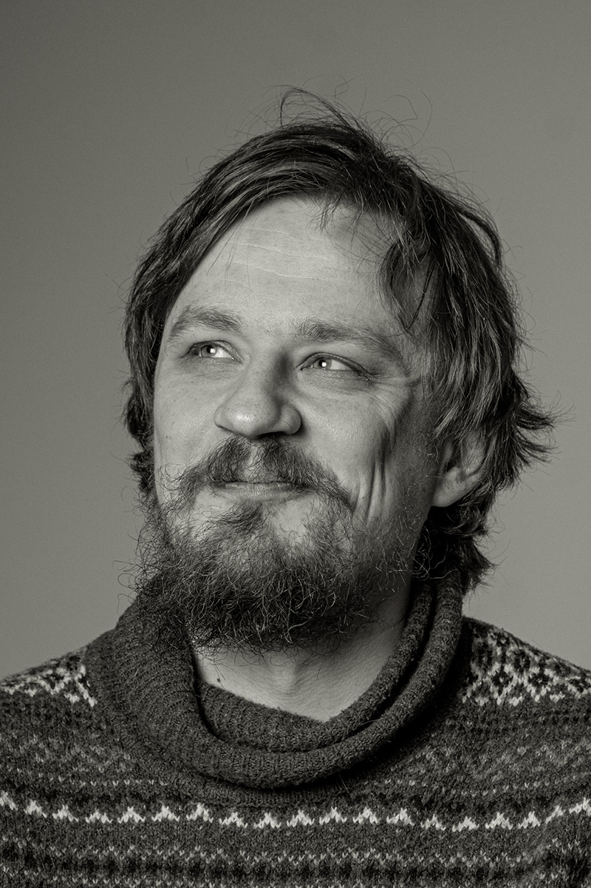

Привет.
Меня зовут Владимир Киселев — программист и архитектор ПО из Санкт-Петербурга. Проектирую и строю программные системы, которые держат нагрузку и живут долго.

§ 02 — Чем занимаюсь
Архитектура — её социальная сторона. Когда систему проектируют вместе, согласовывают ограничения вслух и приходят к решениям, которых никто не нарисовал бы в одиночку.
В повседневной работе — JavaScript и TypeScript (не только на краях), .NET (C#, F#), Python, Java и SQL.
Интересуют социальная архитектура ПО, Agile-архитектура, интернационализация ПО, ТРИЗ и АРИЗ.
§ 03 — Где ещё